જો આ પ્રશ્નનો જવાબ ન મળ્યો હોય, તો ફરી જુઓ સંદર્ભ fs-id2202625.
જો આ પ્રશ્નનો જવાબ ન મળ્યો હોય, તો ફરી જુઓ સંદર્ભ fs-id1949613.
આ પ્રશ્ન ન આવડ્યો હોય તો ફરી જુઓ: સંદર્ભ eip-386
પૂર્ણાંકોના સરવાળાને નમૂના દ્વારા દર્શાવો
ચિત્રમાં “ધન” લખેલું એક વાદળી વર્તુળ અને “ઋણ” લખેલું એક લાલ વર્તુળ છે.
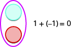
ચિત્રમાં વાદળી વર્તુળની નીચે લાલ વર્તુળ છે. તેમની બાજુમાં 1 + (−1) = 0 લખેલું છે.
ઉકેલ
| પદાવલીનો અર્થ સમજો. | એટલે આનો સરવાળો: અને . |
| પ્રથમ સંખ્યાનો નમૂનો બનાવો. 5 ધન કાઉન્ટરથી શરૂ કરો. | પાંચ આછાં વાદળી વર્તુળ આડી હરોળમાં છે અને વચ્ચેના વર્તુળની સીધી નીચે “5” લખેલું છે, જે વર્તુળોની કુલ સંખ્યા દર્શાવે છે. |
| બીજી સંખ્યાનો નમૂનો બનાવો. 3 ધન કાઉન્ટર ઉમેરો. | 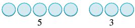 સફેદ પૃષ્ઠભૂમિ પર આછાં વાદળી વર્તુળનાં બે જૂથ છે. પહેલા જૂથમાં પાંચ વર્તુળની નીચે “5” અને બીજા જૂથમાં ત્રણ વર્તુળની નીચે “3” લખેલું છે. |
| કાઉન્ટરની કુલ સંખ્યા ગણો. | આઠ આછાં વાદળી વર્તુળ હરોળમાં છે અને તેમની નીચે “8 ધન” લખેલું છે. |
| 5 અને 3નો સરવાળો 8 છે. |
ચિત્રમાં ધન કાઉન્ટર દર્શાવતાં છ ગુલાબી વર્તુળ હરોળમાં છે. પહેલાં બે વર્તુળ પછીનાં ચાર વર્તુળથી અલગ છે.
6
ચિત્રમાં ધન કાઉન્ટર દર્શાવતાં સાત ગુલાબી વર્તુળ હરોળમાં છે. બે વર્તુળ પછીનાં 5 વર્તુળથી અલગ છે.
7
ઉકેલ
| પદાવલીનો અર્થ સમજો. | એટલે આનો સરવાળો: અને . |
| પ્રથમ સંખ્યાનો નમૂનો બનાવો. 5 ઋણ કાઉન્ટરથી શરૂ કરો. | સફેદ પૃષ્ઠભૂમિ પર પાંચ આછાં લાલ વર્તુળ આડી હરોળમાં છે અને તેમની વચ્ચેની નીચે “−5” લખેલું છે. |
| બીજી સંખ્યાનો નમૂનો બનાવો. 3 ઋણ કાઉન્ટર ઉમેરો. | સફેદ પૃષ્ઠભૂમિ પર પાંચ લાલ વર્તુળનું જૂથ −5 અને તેનાથી અલગ ત્રણ લાલ વર્તુળનું જૂથ −3 દર્શાવે છે. |
| કાઉન્ટરની કુલ સંખ્યા ગણો. | આછાં લાલ રંગનાં અને લાલ કિનારીવાળાં આઠ વર્તુળ હરોળમાં છે. તેમની નીચે “8 ઋણ” લખેલું છે. |
| −5 અને −3નો સરવાળો −8 છે. |
ચિત્રમાં ઋણ કાઉન્ટર દર્શાવતાં 6 ઘેરા ગુલાબી વર્તુળની હરોળ છે. તેમાં પહેલાં 2 અને પછી 4 વર્તુળનાં અલગ જૂથ છે.
−6
ચિત્રમાં ઋણ કાઉન્ટર દર્શાવતાં 7 ઘેરા ગુલાબી વર્તુળની હરોળ છે. તેમાં પહેલાં 2 અને પછી 5 વર્તુળનાં અલગ જૂથ છે.
−7
ઉકેલ
| પદાવલીનો અર્થ સમજો. | એટલે આનો સરવાળો: અને . |
| પ્રથમ સંખ્યાનો નમૂનો બનાવો. 5 ઋણ કાઉન્ટરથી શરૂ કરો. | સફેદ પૃષ્ઠભૂમિ પર પાંચ આછાં લાલ વર્તુળ સરખા અંતરે આડી હરોળમાં છે. |
| બીજી સંખ્યાનો નમૂનો બનાવો. 3 ધન કાઉન્ટર ઉમેરો. | સફેદ પૃષ્ઠભૂમિ પર પાંચ લાલ વર્તુળની આડી હરોળની નીચે ત્રણ આછાં વાદળી વર્તુળની આડી હરોળ છે. |
| શૂન્ય બનાવતી બધી જોડીઓ દૂર કરો. | 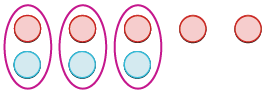 ત્રણ જાંબલી અંડાકારમાં એક લાલ અને એક વાદળી વર્તુળની જોડી છે; તેમની બાજુમાં બે અલગ લાલ વર્તુળ છે. |
| પરિણામ ગણો. | ચિત્રમાં લાલ કિનારીવાળાં બે ગુલાબી વર્તુળ બાજુબાજુ છે અને તેમની નીચે “2 ઋણ” લખેલું છે. |
| −5 અને 3નો સરવાળો −2 છે. |
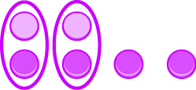
ચિત્રમાં ઉપરની હરોળમાં 2 વાદળી ધન કાઉન્ટર અને નીચેની હરોળમાં 4 લાલ ઋણ કાઉન્ટર છે. બે શૂન્ય બનાવતી જોડીઓ દૂર કરતાં 2 ઋણ કાઉન્ટર બચે છે, તેથી 2 + (−4) = −2.
−2
ચિત્રમાં કાઉન્ટરનાં વર્તુળની બે હરોળ છે. પહેલી હરોળમાં ધન કાઉન્ટર દર્શાવતાં 2 આછાં ગુલાબી વર્તુળ અને બીજી હરોળમાં ઋણ કાઉન્ટર દર્શાવતાં 5 ઘેરાં ગુલાબી વર્તુળ છે.
−3
ઉકેલ
| પદાવલીનો અર્થ સમજો. | એટલે આનો સરવાળો: અને . |
| પ્રથમ સંખ્યાનો નમૂનો બનાવો. 5 ધન કાઉન્ટરથી શરૂ કરો. | સફેદ પૃષ્ઠભૂમિ પર ઘેરી વાદળી કિનારીવાળાં પાંચ આછાં વાદળી વર્તુળ આડી હરોળમાં છે. |
| બીજી સંખ્યાનો નમૂનો બનાવો. 3 ઋણ કાઉન્ટર ઉમેરો. | ચિત્રમાં ઉપરની હરોળમાં પાંચ આછાં વાદળી અને નીચેની હરોળમાં ત્રણ લાલ વર્તુળ છે. |
| શૂન્ય બનાવતી બધી જોડીઓ દૂર કરો. | 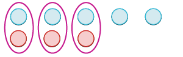 ત્રણ જાંબલી અંડાકારમાં એક આછા વાદળી અને એક લાલ વર્તુળની જોડી છે; તેમની બાજુમાં બે અલગ આછાં વાદળી વર્તુળ છે. |
| પરિણામ ગણો. | સફેદ પૃષ્ઠભૂમિ પર બે આછાં વાદળી વર્તુળની નીચે “2 ધન” લખેલું છે. |
| 5 અને −3નો સરવાળો 2 છે. |
ચિત્રમાં ઉપરની હરોળમાં 2 લાલ ઋણ કાઉન્ટર અને નીચેની હરોળમાં 4 વાદળી ધન કાઉન્ટર છે. બે શૂન્ય બનાવતી જોડીઓ દૂર કરતાં 2 ધન કાઉન્ટર બચે છે, તેથી (−2) + 4 = 2.
2
ચિત્રમાં ઉપરની હરોળમાં 2 લાલ ઋણ કાઉન્ટર અને નીચેની હરોળમાં 5 વાદળી ધન કાઉન્ટર છે. બે શૂન્ય બનાવતી જોડીઓ ઘેરેલી છે અને 3 ધન કાઉન્ટર બચે છે, તેથી (−2) + 5 = 3.
3
ધન અને ઋણ પૂર્ણાંકોના સરવાળાને નમૂના દ્વારા દર્શાવવો
- ⓐ 4 + 2
- ⓑ −3 + 6
- ⓒ 4 + (−5)
- ⓓ -2 + (−3)
| ⓐ | |
| 4 ધન કાઉન્ટરથી શરૂ કરો. | સફેદ પૃષ્ઠભૂમિ પર વાદળી કિનારીવાળાં ચાર આછાં વાદળી વર્તુળ આડી હરોળમાં છે. |
| બે ધન કાઉન્ટર ઉમેરો. | સફેદ પૃષ્ઠભૂમિ પર વાદળી કિનારીવાળાં છ આછાં વાદળી વર્તુળની આડી હરોળમાં ચાર અને બે વર્તુળનાં અલગ જૂથ છે. |
| તમારી પાસે કેટલા કાઉન્ટર છે? |
| ⓑ | |
| 3 ઋણ કાઉન્ટરથી શરૂ કરો. | સફેદ પૃષ્ઠભૂમિ પર ઘેરી લાલ કિનારીવાળાં ત્રણ આછાં લાલ વર્તુળ આડી હરોળમાં છે. |
| 6 ધન કાઉન્ટર ઉમેરો. | ચિત્રમાં ઉપરની હરોળમાં 3 લાલ અને નીચેની હરોળમાં 6 વાદળી વર્તુળ છે. |
| શૂન્ય બનાવતી જોડીઓ દૂર કરો. | 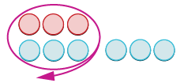 ત્રણ લાલ અને ત્રણ વાદળી વર્તુળની શૂન્ય બનાવતી જોડીઓ તીરવાળા અંડાકારથી ઘેરેલી છે; તેમની પછી 3 વધુ વાદળી વર્તુળ બચે છે. ચિત્રમાં કોઈ અનુગામી બિંદુચિહ્ન નથી. |
| કેટલા કાઉન્ટર બાકી રહ્યા? | સફેદ પૃષ્ઠભૂમિ પર વાદળી કિનારીવાળાં ત્રણ આછાં વાદળી વર્તુળ આડી હરોળમાં છે. |
| . |
| ⓒ | |
| 4 ધન કાઉન્ટરથી શરૂ કરો. | સફેદ પૃષ્ઠભૂમિ પર થોડી ઘેરી વાદળી કિનારીવાળાં ચાર આછાં વાદળી વર્તુળ આડી હરોળમાં છે. |
| 5 ઋણ કાઉન્ટર ઉમેરો. | 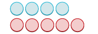 સફેદ પૃષ્ઠભૂમિ પર ઉપરની હરોળમાં ચાર આછાં વાદળી અને નીચેની હરોળમાં પાંચ લાલ વર્તુળ છે. |
| શૂન્ય બનાવતી જોડીઓ દૂર કરો. | 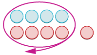 ચાર વાદળી અને ચાર લાલ વર્તુળની શૂન્ય બનાવતી જોડીઓ એક અંડાકારમાં ઘેરેલી છે અને એક લાલ વર્તુળ અલગ છે. |
| કેટલા કાઉન્ટર બાકી રહ્યા? | સફેદ પૃષ્ઠભૂમિની વચ્ચે ઘેરી લાલ કિનારીવાળું એક આછું ગુલાબી અથવા લાલ વર્તુળ છે. |
| . |
| ⓓ | |
| 2 ઋણ કાઉન્ટરથી શરૂ કરો. | સફેદ પૃષ્ઠભૂમિ પર પાતળી ઘેરી લાલ કિનારીવાળાં બે આછાં લાલ વર્તુળ આડા અને નજીક છે. |
| 3 ઋણ કાઉન્ટર ઉમેરો. | સફેદ પૃષ્ઠભૂમિ પર ડાબી તરફનાં બે આછાં લાલ વર્તુળ અને જમણી તરફનાં ત્રણ આછાં લાલ વર્તુળ વચ્ચે જગ્યા છે. |
| તમારી પાસે કેટલા કાઉન્ટર છે? | . |
- ⓐ 3 + 4
- ⓑ −1 + 4
- ⓒ 4 + (−6)
- ⓓ −2 + (−2)
- ⓐ
ત્રણ ધન કાઉન્ટર અને ચાર ધન કાઉન્ટરનાં અલગ જૂથ છે; કુલ 7 ધન કાઉન્ટર છે, તેથી 3 + 4 = 7.
- ⓑ
ઘેરું વાદળી વર્તુળ અલગ છે અને તેની પછી આછાં રાખોડી ચાર વર્તુળ હરોળમાં છે.
- ⓒ
ઉપરની હરોળમાં 4 ધન કાઉન્ટર અને નીચેની હરોળમાં 6 ઋણ કાઉન્ટર છે; ચાર શૂન્ય બનાવતી જોડીઓ દૂર કરતાં 2 ઋણ કાઉન્ટર બચે છે, તેથી 4 + (−6) = −2.
- ⓓ
સફેદ પૃષ્ઠભૂમિ પર ચાર ઘેરાં રાખોડી વર્તુળ બે-બેના બે જૂથમાં છે.
- ⓐ 5 + 1
- ⓑ −3 + 7
- ⓒ 2 + (−8)
- ⓓ −3 + (−4)
- ⓐ
પાંચ સાથે જોડાયેલાં અને એક અલગ એમ છ રાખોડી વર્તુળ હરોળમાં છે.
- ⓑ
3 ઋણ કાઉન્ટર અને 7 ધન કાઉન્ટર છે; ત્રણ શૂન્ય બનાવતી જોડીઓ દૂર કરતાં 4 ધન કાઉન્ટર બચે છે, તેથી −3 + 7 = 4.
- ⓒ
2 ધન કાઉન્ટર અને 8 ઋણ કાઉન્ટર છે; બે શૂન્ય બનાવતી જોડીઓ દૂર કરતાં 6 ઋણ કાઉન્ટર બચે છે, તેથી 2 + (−8) = −6.
- ⓓ
3 ઋણ કાઉન્ટર અને 4 ઋણ કાઉન્ટરનાં અલગ જૂથ છે; કુલ 7 ઋણ કાઉન્ટર છે, તેથી −3 + (−4) = −7.
પૂર્ણાંકો ધરાવતી પદાવલીઓ સરળ કરો
| બંને ધન, સરવાળો ધન | બંને ઋણ, સરવાળો ઋણ |
| નિશાનીઓ સમાન હોય ત્યારે બધા કાઉન્ટર એક જ રંગના હોય છે, તેથી તેમનો સરવાળો કરો. | |
| જુદી નિશાનીઓ, ઋણ વધુ | જુદી નિશાનીઓ, ધન વધુ |
| સરવાળો ઋણ | સરવાળો ધન |
| નિશાનીઓ જુદી હોય ત્યારે કેટલાક કાઉન્ટર શૂન્ય બનાવતી જોડીઓ બનાવે છે; કેટલા બાકી રહે છે તે જોવા બાદબાકી કરો. |
- ⓐ
- ⓑ
ઉકેલ
- ⓐ
- ⓑ
- ⓐ −17
- ⓑ 57
- ⓐ
- ⓑ
- ⓐ −46
- ⓑ 26
ઉકેલ
ઉકેલ
| કૌંસની અંદર સરળ કરો. | |
| ગુણાકાર કરો. | |
| ડાબેથી જમણે સરવાળો કરો. |
પૂર્ણાંકો ધરાવતી ચલ પદાવલીઓની કિંમત શોધો
- ⓐ
- ⓑ
ઉકેલ
| ⓐ કિંમત શોધો જ્યારે | |
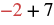 ચિત્રમાં ગાણિતિક પદાવલી −2 + 7 છે. તેમાં −2 લાલ અને વત્તાની નિશાની તથા 7 કાળાં છે. |
|
ચિત્રમાં ચલ xની જગ્યાએ −2 મૂકવાની સૂચના છે; તેમાં −2 લાલ છે અને મૂકવાની કિંમત −2 દર્શાવે છે. |
ચિત્રમાં ગાણિતિક પદાવલી −2 + 7 છે. તેમાં −2 લાલ અને વત્તાની નિશાની તથા 7 કાળાં છે. |
| સરળ કરો. | સફેદ પૃષ્ઠભૂમિના ઉપર જમણા ખૂણે કાળા રંગમાં 5 લખેલું છે. |
| ⓑ કિંમત શોધો જ્યારે | |
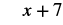 સફેદ પૃષ્ઠભૂમિ પર ગાણિતિક પદાવલી x + 7 છે. |
|
ચિત્રમાં ચલ xની જગ્યાએ −11 મૂકવાની સૂચના છે; તેમાં −11 લાલ છે. |
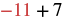 ચિત્રમાં ઋણ અગિયાર અને ધન સાતનો સરવાળો −11 + 7 લખેલો છે; તેમાં ઋણ સંખ્યા લાલ અને વત્તાની નિશાની તથા સાત કાળાં છે. |
| સરળ કરો. | સફેદ પૃષ્ઠભૂમિ પર કાળા રંગમાં −4 લખેલું છે. |
- ⓐ
- ⓑ
- ⓐ 2
- ⓑ −12
- ⓐ
- ⓑ
- ⓐ 2
- ⓑ −1
- ⓐ
- ⓑ
ઉકેલ
| ⓐ કિંમત શોધો જ્યારે | |
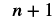 સફેદ પૃષ્ઠભૂમિ પર કાળા ઘેરા અક્ષરમાં ગાણિતિક પદાવલી n + 1 છે. |
|
ચિત્રમાં ચલ nની જગ્યાએ −5 મૂકવાની સૂચના છે; એટલે nની જગ્યાએ −5 મૂકવાનું છે. |
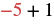 ચિત્રમાં ગાણિતિક પદાવલી −5 + 1 છે; તેમાં −5 લાલ અને +1 કાળું છે. |
| સરળ કરો. | સફેદ પૃષ્ઠભૂમિ પર ઋણ ચાર એટલે −4 લખેલું છે. |
| ⓑ કિંમત શોધો જ્યારે | |
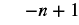 સફેદ પૃષ્ઠભૂમિ પર ગાણિતિક પદાવલી −n + 1 છે. |
|
ચિત્રમાં ચલ nની જગ્યાએ −5 મૂકવાની સૂચના છે; તેમાં −5 લાલ છે. |
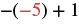 ચિત્રની પદાવલીમાં બહાર ઋણ નિશાની, કૌંસની અંદર ઋણ પાંચ અને પછી વત્તા એક છે; તેમાં અંદરની ઋણ નિશાની અને 5 લાલ છે. |
| સરળ કરો. | 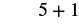 સફેદ પૃષ્ઠભૂમિ પર કાળા રંગમાં ગાણિતિક પદાવલી 5 + 1 છે. |
| સરવાળો કરો. | સફેદ પૃષ્ઠભૂમિના ઉપર જમણા ખૂણે ઝાંખું 6 લખેલું છે. |
- ⓐ
- ⓑ
- ⓐ −6
- ⓑ 10
- ⓐ
- ⓑ
- ⓐ −1
- ⓑ 17
ઉકેલ
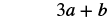 સફેદ પૃષ્ઠભૂમિ પર ગાણિતિક પદાવલી 3a + b છે. |
|
સફેદ પૃષ્ઠભૂમિ પર ચલ aની જગ્યાએ 12 અને bની જગ્યાએ −30 મૂકવાની સૂચના છે; 12 લાલ અને −30 આછું વાદળી છે. |
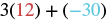 ગાણિતિક પદાવલી 3(12) + (−30)માં 12 લાલ અને −30 વાદળી છે. |
| ગુણાકાર કરો. | 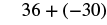 સફેદ પૃષ્ઠભૂમિ પર ગાણિતિક પદાવલી 36 + (−30) છે. |
| સરવાળો કરો. | સફેદ પૃષ્ઠભૂમિના ઉપર જમણા ખૂણે ઝાંખું 6 લખેલું છે. |
ઉકેલ
ચિત્રમાં ચલ xની જગ્યાએ −18 અને yની જગ્યાએ 24 મૂકવાની સૂચના છે; −18 લાલ અને 24 આછું વાદળી છે. |
|
| કૌંસની અંદર સરવાળો કરો. | |
| સરળ કરો. |
શબ્દસમૂહોને બીજગણિતીય પદાવલીઓમાં ફેરવો
ઉકેલ
| −9 અને 5નો સરવાળો સરવાળાની ક્રિયા દર્શાવે છે. | આનો સરવાળો: અને |
| ફેરવો. | |
| સરળ કરો. |
ઉકેલ
| આનો સરવાળો: અને ; તેમાં આટલો વધારો: | |
| ફેરવો. | |
| સરળ કરો. | |
| સરવાળો કરો. |
વ્યવહારુ પ્રશ્નોમાં પૂર્ણાંકોનો સરવાળો કરો
ઉકેલ
| તાપમાન માટે શબ્દસમૂહ લખો. | તાપમાનમાં 12 ડિગ્રી વધારો થયો; શરૂઆતનું તાપમાન શૂન્યથી 7 ડિગ્રી નીચે હતું. |
| ગાણિતિક લખાવટમાં ફેરવો. | −7 + 12 |
| સરળ કરો. | 5 |
| પ્રશ્નનો જવાબ આપવા વાક્ય લખો. | બપોરે તાપમાન 5 ડિગ્રી ફેરનહાઇટ હતું. |
ઉકેલ
| દડાના સ્થાન માટે શબ્દસમૂહ લખો. | 42થી શરૂ કરો, પછી 6 ગુમાવો, 4 મેળવો અને 8 ગુમાવો. |
| ગાણિતિક લખાવટમાં ફેરવો. | 42 − 6 + 4 − 8 |
| સરળ કરો. | 32 |
| પ્રશ્નનો જવાબ આપવા વાક્ય લખો. | ત્રણેય ચાલના અંતે દડો 32-યાર્ડ રેખા પર છે. |
મુખ્ય ખ્યાલો
- ધન અને ઋણ પૂર્ણાંકોનો સરવાળો
બંને ધન, સરવાળો ધન બંને ઋણ, સરવાળો ઋણ નિશાનીઓ સમાન હોય ત્યારે બધા કાઉન્ટર એક જ રંગના હોય છે, તેથી તેમનો સરવાળો કરો. જુદી નિશાનીઓ, ઋણ વધુ જુદી નિશાનીઓ, ધન વધુ સરવાળો ઋણ સરવાળો ધન નિશાનીઓ જુદી હોય ત્યારે કેટલાક કાઉન્ટર શૂન્ય બનાવતી જોડીઓ બનાવે છે; કેટલા બાકી રહે છે તે જોવા બાદબાકી કરો.
અભ્યાસથી નિપુણતા મળે
ચિત્રમાં ધન કાઉન્ટર દર્શાવતાં 11 આછાં ગુલાબી વર્તુળની હરોળ છે. તેમાં સાત અને ચાર વર્તુળનાં અલગ જૂથ છે.
11
ચિત્રમાં ઋણ કાઉન્ટર દર્શાવતાં 9 ઘેરાં ગુલાબી વર્તુળની હરોળ છે. તેમાં છ અને ત્રણ વર્તુળનાં અલગ જૂથ છે.
−9
ચિત્રમાં વર્તુળની બે હરોળ છે. ઉપરની હરોળમાં ઋણ કાઉન્ટર દર્શાવતાં 7 ઘેરાં ગુલાબી વર્તુળ અને નીચેની હરોળમાં ધન કાઉન્ટર દર્શાવતાં 5 આછાં ગુલાબી વર્તુળ છે.
−2
ઉપરની હરોળમાં 8 વાદળી ધન કાઉન્ટર અને નીચેની હરોળમાં 7 લાલ ઋણ કાઉન્ટર છે; સાત શૂન્ય બનાવતી જોડીઓ દૂર કરતાં 1 ધન કાઉન્ટર બચે છે, તેથી 8 + (−7) = 1.
1
- ⓐ
- ⓑ
- ⓐ −18
- ⓑ −87
- ⓐ
- ⓑ
- ⓐ
- ⓑ
- ⓐ −47
- ⓑ 16
- ⓐ
- ⓑ
- ⓐ
- ⓑ
- ⓐ −4
- ⓑ 10
- ⓐ
- ⓑ
- ⓐ
- ⓑ
- ⓐ −13
- ⓑ 5
- ⓐ
- ⓑ
રોજિંદું ગણિત
લેખન અભ્યાસ
સ્વ-ચકાસણી
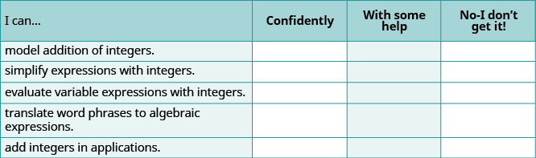
સ્વ-મૂલ્યાંકન કોષ્ટકમાં ચાર સ્તંભ અને છ હરોળ છે. શીર્ષકો છે: “હું આ કરી શકું છું...”, “આત્મવિશ્વાસ સાથે”, “થોડી મદદથી” અને “નહીં—મને સમજાયું નથી!”. પાંચ કુશળતા છે: પૂર્ણાંકોના સરવાળાને નમૂના દ્વારા દર્શાવવો; પૂર્ણાંકો ધરાવતી પદાવલીઓ સરળ કરવી; પૂર્ણાંકો ધરાવતી ચલ પદાવલીઓની કિંમત શોધવી; શબ્દસમૂહોને બીજગણિતીય પદાવલીઓમાં ફેરવવા; અને વ્યવહારુ પ્રશ્નોમાં પૂર્ણાંકોનો સરવાળો કરવો. પસંદગી માટેનાં 15 ખાનાં ખાલી છે.